Name: Math 428
Exam 1
5 March 2002
Yes, mathematics has two faces; it is the rigorous science of
Euclid but it is also something else. Mathematics presented in the
Euclidean way appears as a systematic, deductive science; but
mathematics in the making appears as an experimental, inductive
science.
- from ``How to Solve It'' by G. Polya
Instructions: Show all work to receive full or partial credit. You may use a scientific calculator on this exam. All University rules and guidelines for student conduct are applicable.
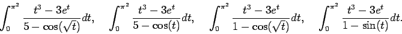
All of our convergence analysis of quadratures so far has been based on the assumptions that one can expand the functions in a Taylor series. To do so, the functions must be continuous and have the right number of derivatives. In the case of the midpoint rule, we need three derivatives. By inspection, the first two functions, have no problems with asymptotes and plenty of derivatives, so we would expect the midpoint rule to converge. The latter two functions have asymptotes so they are not even continuous on the domain of integration, and we would not expect the midpoint rule to converge to the integral, assuming that the integral converges.
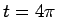
. She acquires the following results for three runs.| h | 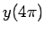 |
|
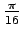 |
1.07455259139819 |
|
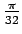 |
1.04051345264161 |
|
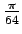 |
1.02121990730698 |
No problem.
B) She needs four digits of accuracy. What step size should she use?
To make the relative error smaller than 10-3, so that the first
four digits are credible, we expect
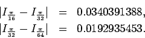
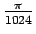
will do it.
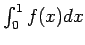
knowing f(0),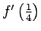
and f(1). In other words, determine nonzero constants A1, A2 and A3 where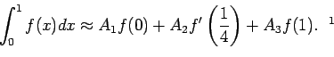
This is taken from your homework (Set #1, question 5). We expect the quadrature to have third order accuracy because it involves three pieces of information about the function. We found in the homework and subsequent discussions in class that the method is a third order method if
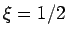
, but this is not the case in this exam question.
Many students made the mistake of trying to use divided differences or
Lagrange polynomials for this problem. Remember, that these are
interpolation techniques, but this problem involves mixed data about
f and f' so these methods are not applicable. You must proceed
with undetermined coefficients: Try
If you fit the polynomial through the given data, you find by solving
the resulting linear system that
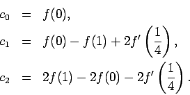
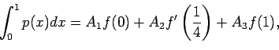
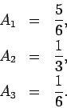
Thus, we find that
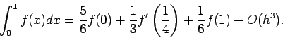
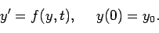
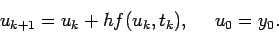
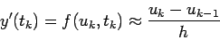
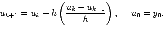
Recall: local truncation error is the error in one time step assuming
that you have exact initial data. That is, we assume that uk = ykand
uk-1 = yk-1. We need to try to estimate the difference
between yk+1 and uk+1. After some simplication,
the numerical method is
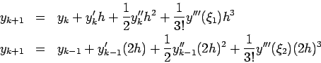
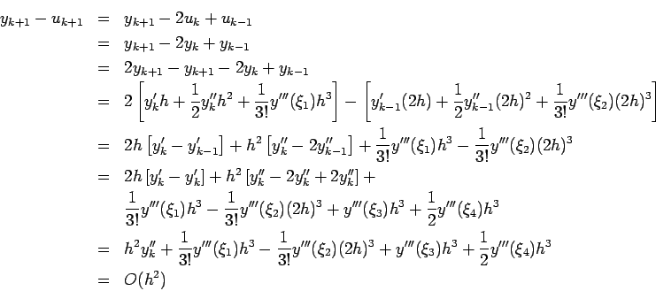
This problem follows the same steps as forward Euler which was done in class.
First, we find the local truncation error. Using a Taylor expansion,
we seen that
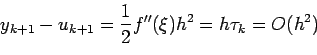
Second, we have to bound the error globally. If we let
ek = yk -
uk, we can find out how the errors grow globally. It works
similarly to
the same way it did in class except for the first line.
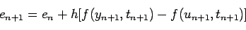
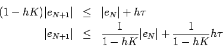
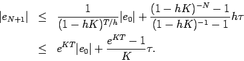
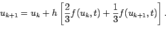
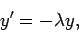
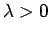
0$">. For what values of
This is direct application of the scalar test equation. If we substitute
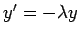
into our numerical method, we obtain the recurrence relation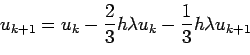
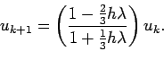
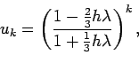
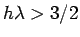
3/2$">, so we expect these solutions to oscillate. Similarly, the modulus is greater than 1 when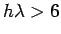
6$">. At this point, solutions will be unstable.